零拷贝技术非常重要，由于该技术和linux内核关系紧密，需要较多内核方面的了解。
物理内存和虚拟内存
由于操作系统的进程与进程之间是共享 CPU 和内存资源的，因此需要一套完善的内存管理机制防止进程之间内存泄漏的问题。为了更加有效地管理内存并减少出错，现代操作系统提供了一种对主存的抽象概念，即是虚拟内存（Virtual Memory）。虚拟内存为每个进程提供了一个一致的、私有的地址空间，它让每个进程产生了一种自己在独享主存的错觉（每个进程拥有一片连续完整的内存空间）。
物理内存
物理内存（Physical memory）是相对于虚拟内存（Virtual Memory）而言的。物理内存指通过物理内存条而获得的内存空间，而虚拟内存则是指将硬盘的一块区域划分来作为内存。内存主要作用是在计算机运行时为操作系统和各种程序提供临时储存。在应用中，自然是顾名思义，物理上，真实存在的插在主板内存槽上的内存条的容量的大小。
虚拟内存
虚拟内存是计算机系统内存管理的一种技术。 它使得应用程序认为它拥有连续的可用的内存（一个连续完整的地址空间）。而实际上，虚拟内存通常是被分隔成多个物理内存碎片，还有部分暂时存储在外部磁盘存储器上，在需要时进行数据交换，加载到物理内存中来。 目前，大多数操作系统都使用了虚拟内存，如 Windows 系统的虚拟内存、Linux 系统的交换空间等等。
虚拟内存地址和用户进程紧密相关，一般来说不同进程里的同一个虚拟地址指向的物理地址是不一样的，所以离开进程谈虚拟内存没有任何意义。每个进程所能使用的虚拟地址大小和 CPU 位数有关。在 32 位的系统上，虚拟地址空间大小是 2 ^ 32 = 4G，在 64位系统上，虚拟地址空间大小是 2 ^ 64 = 2 ^ 34G，而实际的物理内存可能远远小于虚拟内存的大小。每个用户进程维护了一个单独的页表（Page Table），虚拟内存和物理内存就是通过这个页表实现地址空间的映射的。下面给出两个进程 A、B 各自的虚拟内存空间以及对应的物理内存之间的地址映射示意图：
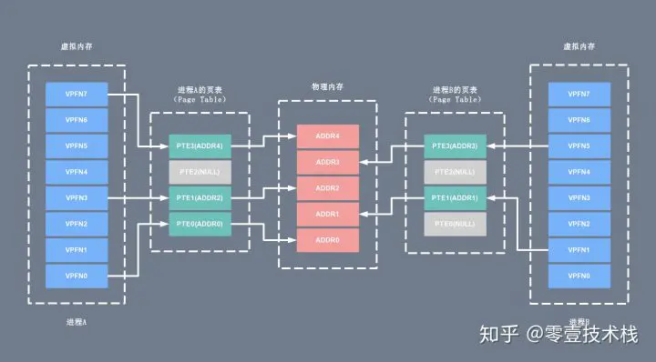
当进程执行一个程序时，需要先从先内存中读取该进程的指令，然后执行，获取指令时用到的就是虚拟地址。这个虚拟地址是程序链接时确定的（内核加载并初始化进程时会调整动态库的地址范围）。为了获取到实际的数据，CPU 需要将虚拟地址转换成物理地址，CPU 转换地址时需要用到进程的页表（Page Table），而页表（Page Table）里面的数据由操作系统维护。
其中页表（Page Table）可以简单的理解为单个内存映射（Memory Mapping）的链表（当然实际结构很复杂），里面的每个内存映射（Memory Mapping）都将一块虚拟地址映射到一个特定的地址空间（物理内存或者磁盘存储空间）。每个进程拥有自己的页表（Page Table），和其它进程的页表（Page Table）没有关系。
通过上面的介绍，我们可以简单的将用户进程申请并访问物理内存（或磁盘存储空间）的过程总结如下：
- 用户进程向操作系统发出内存申请请求
- 系统会检查进程的虚拟地址空间是否被用完，如果有剩余，给进程分配虚拟地址
- 系统为这块虚拟地址创建的内存映射（Memory Mapping），并将它放进该进程的页表（Page Table）
- 系统返回虚拟地址给用户进程，用户进程开始访问该虚拟地址
- CPU 根据虚拟地址在此进程的页表（Page Table）中找到了相应的内存映射（Memory Mapping），但是这个内存映射（Memory Mapping）没有和物理内存关联，于是产生缺页中断
- 操作系统收到缺页中断后，分配真正的物理内存并将它关联到页表相应的内存映射（Memory Mapping）。中断处理完成后 CPU 就可以访问内存了
- 当然缺页中断不是每次都会发生，只有系统觉得有必要延迟分配内存的时候才用的着，也即很多时候在上面的第 3 步系统会分配真正的物理内存并和内存映射（Memory Mapping）进行关联。
在用户进程和物理内存（磁盘存储器）之间引入虚拟内存主要有以下的优点：
- 地址空间：提供更大的地址空间，并且地址空间是连续的，使得程序编写、链接更加简单
- 进程隔离：不同进程的虚拟地址之间没有关系，所以一个进程的操作不会对其它进程造成影响
- 数据保护：每块虚拟内存都有相应的读写属性，这样就能保护程序的代码段不被修改，数据块不能被执行等，增加了系统的安全性
- 内存映射：有了虚拟内存之后，可以直接映射磁盘上的文件（可执行文件或动态库）到虚拟地址空间。这样可以做到物理内存延时分配，只有在需要读相应的文件的时候，才将它真正的从磁盘上加载到内存中来，而在内存吃紧的时候又可以将这部分内存清空掉，提高物理内存利用效率，并且所有这些对应用程序是都透明的
- 共享内存：比如动态库只需要在内存中存储一份，然后将它映射到不同进程的虚拟地址空间中，让进程觉得自己独占了这个文件。进程间的内存共享也可以通过映射同一块物理内存到进程的不同虚拟地址空间来实现共享
- 物理内存管理：物理地址空间全部由操作系统管理，进程无法直接分配和回收，从而系统可以更好的利用内存，平衡进程间对内存的需求
内核空间和用户空间
操作系统的核心是内核，独立于普通的应用程序，可以访问受保护的内存空间，也有访问底层硬件设备的权限。为了避免用户进程直接操作内核，保证内核安全，操作系统将虚拟内存划分为两部分，一部分是内核空间（Kernel-space），一部分是用户空间（User-space）。 在 Linux 系统中，内核模块运行在内核空间，对应的进程处于内核态；而用户程序运行在用户空间，对应的进程处于用户态。
内核进程和用户进程所占的虚拟内存比例是 1:3，而 Linux x86_32 系统的寻址空间（虚拟存储空间）为 4G（2的32次方），将最高的 1G 的字节（从虚拟地址 0xC0000000 到 0xFFFFFFFF）供内核进程使用，称为内核空间；而较低的 3G 的字节（从虚拟地址 0x00000000 到 0xBFFFFFFF），供各个用户进程使用，称为用户空间。下图是一个进程的用户空间和内核空间的内存布局：
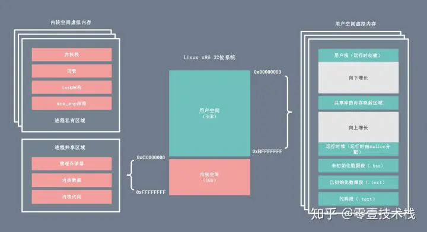
内核空间
内核空间总是驻留在内存中，它是为操作系统的内核保留的。应用程序是不允许直接在该区域进行读写或直接调用内核代码定义的函数的。上图左侧区域为内核进程对应的虚拟内存，按访问权限可以分为进程私有和进程共享两块区域。
- 进程私有的虚拟内存：每个进程都有单独的内核栈、页表、task 结构以及 mem_map 结构等。
- 进程共享的虚拟内存：属于所有进程共享的内存区域，包括物理存储器、内核数据和内核代码区域。
用户空间
每个普通的用户进程都有一个单独的用户空间，处于用户态的进程不能访问内核空间中的数据，也不能直接调用内核函数的 ，因此要进行系统调用的时候，就要将进程切换到内核态才行。用户空间包括以下几个内存区域：
- 运行时栈：由编译器自动释放，存放函数的参数值，局部变量和方法返回值等。每当一个函数被调用时，该函数的返回类型和一些调用的信息被存储到栈顶，调用结束后调用信息会被弹出弹出并释放掉内存。栈区是从高地址位向低地址位增长的，是一块连续的内在区域，最大容量是由系统预先定义好的，申请的栈空间超过这个界限时会提示溢出，用户能从栈中获取的空间较小。
- 运行时堆：用于存放进程运行中被动态分配的内存段，位于 BSS 和栈中间的地址位。由卡发人员申请分配（malloc）和释放（free）。堆是从低地址位向高地址位增长，采用链式存储结构。频繁地 malloc/free 造成内存空间的不连续，产生大量碎片。当申请堆空间时，库函数按照一定的算法搜索可用的足够大的空间。因此堆的效率比栈要低的多。
- 代码段：存放 CPU 可以执行的机器指令，该部分内存只能读不能写。通常代码区是共享的，即其它执行程序可调用它。假如机器中有数个进程运行相同的一个程序，那么它们就可以使用同一个代码段。
- 未初始化的数据段：存放未初始化的全局变量，BSS 的数据在程序开始执行之前被初始化为 0 或 NULL。
- 已初始化的数据段：存放已初始化的全局变量，包括静态全局变量、静态局部变量以及常量。
- 内存映射区域：例如将动态库，共享内存等虚拟空间的内存映射到物理空间的内存，一般是 mmap 函数所分配的虚拟内存空间。
linux内部层级
内核态可以执行任意命令，调用系统的一切资源，而用户态只能执行简单的运算，不能直接调用系统资源。用户态必须通过系统接口（System Call），才能向内核发出指令。比如，当用户进程启动一个 bash 时，它会通过 getpid() 对内核的 pid 服务发起系统调用，获取当前用户进程的 ID；当用户进程通过 cat 命令查看主机配置时，它会对内核的文件子系统发起系统调用。
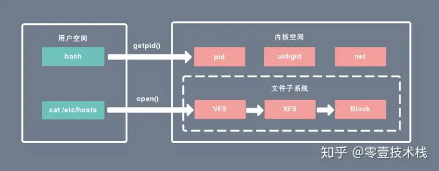
- 内核空间可以访问所有的 CPU 指令和所有的内存空间、I/O 空间和硬件设备。
- 用户空间只能访问受限的资源，如果需要特殊权限，可以通过系统调用获取相应的资源。
- 用户空间允许页面中断，而内核空间则不允许。
- 内核空间和用户空间是针对线性地址空间的。
- x86 CPU中用户空间是 0 - 3G 的地址范围，内核空间是 3G - 4G 的地址范围。x86_64 CPU 用户空间地址范围为0x0000000000000000 – 0x00007fffffffffff，内核地址空间为 0xffff880000000000 - 最大地址。
- 所有内核进程（线程）共用一个地址空间，而用户进程都有各自的地址空间。
有了用户空间和内核空间的划分后，Linux 内部层级结构可以分为三部分，从最底层到最上层依次是硬件、内核空间和用户空间，如下图所示:
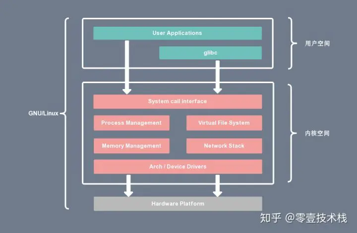
上下文切换
进程上下文切换
Linux 按照特权等级，把进程的运行空间分为内核空间和用户空间，分别对应着下图中， CPU 特权等级的 Ring 0 和 Ring 3。内核空间（Ring 0）具有最高权限，可以直接访问所有资源，而用户空间（Ring 3）只能访问受限资源，不能直接访问内存等硬件设备，必须通过系统调用陷入到内核中，才能访问这些特权资源。
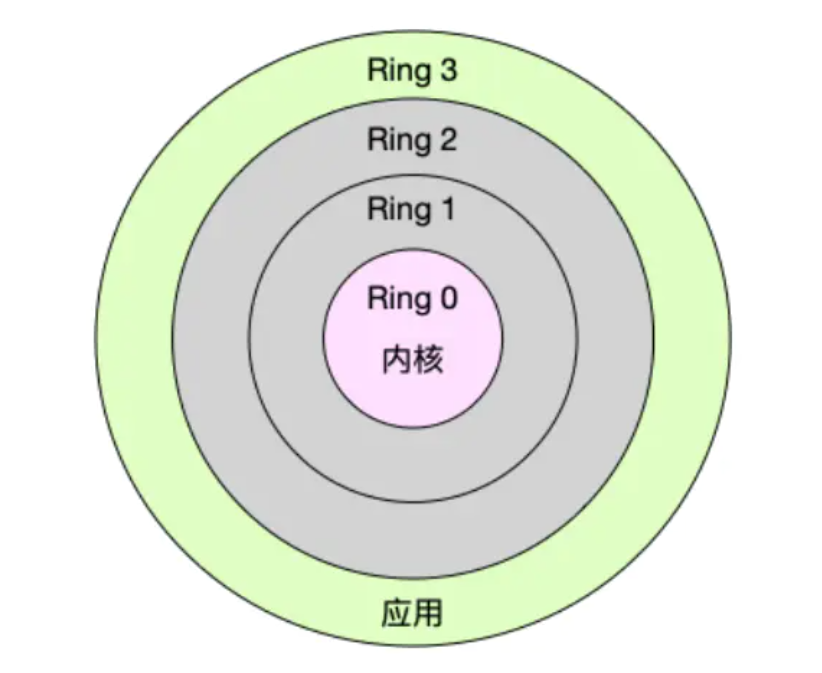
换个角度看，也就是说，进程既可以在用户空间运行，又可以在内核空间中运行。进程在用户空间运行时，被称为进程的用户态，而陷入内核空间的时候，被称为进程的内核态。从用户态到内核态的转变，需要通过系统调用来完成。比如，当我们查看文件内容时，就需要多次系统调用来完成：首先调用 open() 打开文件，然后调用 read() 读取文件内容，并调用 write() 将内容写到标准输出，最后再调用 close() 关闭文件。
那么系统调用的过程是如何发生 CPU 上下文的切换的呢？我们再了解两个概念：
- CPU 寄存器，是 CPU 内置的容量小、但速度极快的内存。
- 程序计数器，则是用来存储 CPU 正在执行的指令位置、或者即将执行的下一条指令位置。它们都是 CPU 在运行任何任务前，必须的依赖环境，因此也被叫做 CPU 上下文。
知道了什么是 CPU 上下文，我想你也很容易理解 CPU 上下文切换。CPU 上下文切换，就是先把前一个任务的 CPU 上下文（也就是 CPU 寄存器和程序计数器）保存起来，然后加载新任务的上下文到这些寄存器和程序计数器，最后再跳转到程序计数器所指的新位置，运行新任务。而这些保存下来的上下文，会存储在系统内核中，并在任务重新调度执行时再次加载进来。这样就能保证任务原来的状态不受影响，让任务看起来还是连续运行。
回到系统调用的问题上，CPU 寄存器里原来用户态的指令位置，需要先保存起来。接着，为了执行内核态代码，CPU 寄存器需要更新为内核态指令的新位置。最后才是跳转到内核态运行内核任务。而系统调用结束后，CPU 寄存器需要恢复原来保存的用户态，然后再切换到用户空间，继续运行进程。所以，一次系统调用的过程，其实是发生了两次 CPU 上下文切换。
不过，需要注意的是，系统调用过程中，并不会涉及到虚拟内存等进程用户态的资源，也不会切换进程。这跟我们通常所说的进程上下文切换是不一样的：
- 进程上下文切换，是指从一个进程切换到另一个进程运行。
- 系统调用过程中一直是同一个进程在运行。
那么，进程上下文切换跟系统调用又有什么区别呢？首先，你需要知道，进程是由内核来管理和调度的，进程的切换只能发生在内核态。所以，进程的上下文不仅包括了虚拟内存、栈、全局变量等用户空间的资源，还包括了内核堆栈、寄存器等内核空间的状态。因此，进程的上下文切换就比系统调用时多了一步：在保存当前进程的内核状态和 CPU 寄存器之前，需要先把该进程的虚拟内存、栈等保存下来；而加载了下一进程的内核态后，还需要刷新进程的虚拟内存和用户栈。
保存上下文和恢复上下文的过程并不是“免费”的，需要内核在 CPU 上运行才能完成。
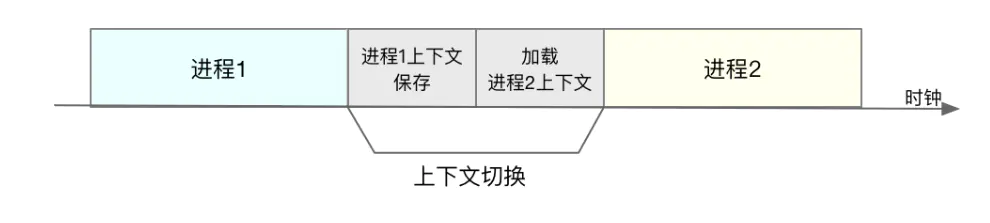
每次上下文切换都需要几十纳秒到数微秒的 CPU 时间。这个时间还是相当可观的，特别是在进程上下文切换次数较多的情况下，很容易导致 CPU 将大量时间耗费在寄存器、内核栈以及虚拟内存等资源的保存和恢复上，进而大大缩短了真正运行进程的时间。Linux 通过 TLB（Translation Lookaside Buffer）来管理虚拟内存到物理内存的映射关系。当虚拟内存更新后，TLB 也需要刷新，内存的访问也会随之变慢。特别是在多处理器系统上，缓存是被多个处理器共享的，刷新缓存不仅会影响当前处理器的进程，还会影响共享缓存的其他处理器的进程。
TLB是一种高速缓存，内存管理硬件使用它来改善虚拟地址到物理地址的转换速度。当前所有的个人桌面，笔记本和服务器处理器都使用TLB来进行虚拟地址到物理地址的映射。使用TLB内核可以快速的找到虚拟地址指向物理地址，而不需要请求RAM内存获取虚拟地址到物理地址的映射关系。
虚拟地址和物理地址的话，大致是这么理解的。每个进程都有自己独立的4G内存空间，各个进程的内存空间具有类似的结构。一个新进程建立的时候，将会建立起自己的内存空间，此进程的数据，代码等从磁盘拷贝到自己的进程空间，哪些数据在哪里，都由进程控制表中的task_struct记录，它会有一条链表，记录中内存空间的分配情况，哪些地址有数据，哪些地址无数据，哪些可读，哪些可写，都可以通过这个链表记录。每个进程已经分配的内存空间，都与对应的磁盘空间映射
可是计算机明明没有那么多内存（n个进程的话就需要n*4G）内存。还有建立一个进程，就要把磁盘上的程序文件拷贝到进程对应的内存中去，对于一个程序对应的多个进程这种情况是根本不需要这样操作的。
所以，每个进程的4G内存空间只是虚拟内存空间，每次访问内存空间的某个地址，都需要把地址翻译为实际物理内存地址。所有进程共享同一物理内存，每个进程只把自己目前需要的虚拟内存空间映射并存储到物理内存上。进程要知道哪些内存地址上的数据在物理内存上，哪些不在，还有在物理内存上的哪里，需要用页表来记录。页表的每一个表项分两部分，第一部分记录此页是否在物理内存上，第二部分记录物理内存页的地址（如果在的话）。当进程访问某个虚拟地址，去看页表，如果发现对应的数据不在物理内存中，则缺页异常。缺页异常的处理过程，就是把进程需要的数据从磁盘上拷贝到物理内存中。
知道了进程上下文切换潜在的性能问题后，我们再来看，究竟什么时候会切换进程上下文。显然，只有在进程调度的时候，才需要切换上下文。Linux 为每个 CPU 都维护了一个就绪队列，将活跃进程（即正在运行和正在等待 CPU 的进程）按照优先级和等待 CPU 的时间排序，然后选择最需要 CPU 的进程，也就是优先级最高和等待 CPU 时间最长的进程来运行。
那么，进程在什么时候才会被调度到 CPU 上运行呢？最容易想到的一个时机，就是进程执行完终止了，它之前使用的 CPU 会释放出来，这个时候再从就绪队列里，拿一个新的进程过来运行。其实还有很多其他场景，也会触发进程调度，在这里我给你逐个梳理下。
其一，为了保证所有进程可以得到公平调度，CPU 时间被划分为一段段的时间片，这些时间片再被轮流分配给各个进程。这样，当某个进程的时间片耗尽了，就会被系统挂起，切换到其它正在等待 CPU 的进程运行。
其二，进程在系统资源不足（比如内存不足）时，要等到资源满足后才可以运行，这个时候进程也会被挂起，并由系统调度其他进程运行。
其三，当进程通过 sleep 这样的方法将自己主动挂起时，自然也会重新调度。
其四，当有优先级更高的进程运行时，为了保证高优先级进程的运行，当前进程会被挂起，由高优先级进程来运行。
最后一个，发生硬件中断时，CPU 上的进程会被中断挂起，转而执行内核中的中断服务程序。
线程上下文
线程与进程最大的区别在于，线程是调度的基本单位，而进程则是资源拥有的基本单位。说白了，所谓内核中的任务调度，实际上的调度对象是线程；而进程只是给线程提供了虚拟内存、全局变量等资源。所以，对于线程和进程，我们可以这么理解：
- 当进程只有一个线程时，可以认为进程就等于线程。
- 当进程拥有多个线程时，这些线程会共享相同的虚拟内存和全局变量等资源。这些资源在上下文切换时是不需要修改的。
- 另外，线程也有自己的私有数据，比如栈和寄存器等，这些在上下文切换时也是需要保存的。
这么一来，线程的上下文切换其实就可以分为两种情况：
第一种， 前后两个线程属于不同进程。此时，因为资源不共享，所以切换过程就跟进程上下文切换是一样。
第二种，前后两个线程属于同一个进程。此时，因为虚拟内存是共享的，所以在切换时，虚拟内存这些资源就保持不动，只需要切换线程的私有数据、寄存器等不共享的数据。到这里你应该也发现了，虽然同为上下文切换，但同进程内的线程切换，要比多进程间的切换消耗更少的资源，而这，也正是多线程代替多进程的一个优势。
中断上下文
一个场景也会切换 CPU 上下文，那就是中断。为了快速响应硬件的事件，中断处理会打断进程的正常调度和执行，转而调用中断处理程序，响应设备事件。而在打断其他进程时，就需要将进程当前的状态保存下来，这样在中断结束后，进程仍然可以从原来的状态恢复运行。
跟进程上下文不同，中断上下文切换并不涉及到进程的用户态。所以，即便中断过程打断了一个正处在用户态的进程，也不需要保存和恢复这个进程的虚拟内存、全局变量等用户态资源。中断上下文，其实只包括内核态中断服务程序执行所必需的状态，包括 CPU 寄存器、内核堆栈、硬件中断参数等。对同一个 CPU 来说，中断处理比进程拥有更高的优先级，所以中断上下文切换并不会与进程上下文切换同时发生。
同样道理，由于中断会打断正常进程的调度和执行，所以大部分中断处理程序都短小精悍，以便尽可能快的执行结束。另外，跟进程上下文切换一样，中断上下文切换也需要消耗 CPU，切换次数过多也会耗费大量的 CPU，严重降低系统的整体性能。
总结一下，CPU 上下文切换，是保证 Linux 系统正常工作的核心功能之一，一般情况下不需要我们特别关注。但过多的上下文切换，会把 CPU 时间消耗在寄存器、内核栈以及虚拟内存等数据的保存和恢复上，从而缩短进程真正运行的时间，导致系统的整体性能大幅下降。
页缓存技术
读取文件时，是先把磁盘文件拷贝到 PageCache 上，再拷贝到进程中。为什么这样做呢？有两个原因所致。
由于磁盘比内存的速度慢许多，所以我们应该想办法把读写磁盘替换成读写内存，比如把磁盘中的数据复制到内存中，就可以用读内存替换读磁盘。但是，内存空间远比磁盘要小，内存中注定只能复制一小部分磁盘中的数据。通常，刚被访问的数据在短时间内再次被访问的概率很高。用 PageCache 缓存最近访问的数据，当空间不足时淘汰最久未被访问的缓存（即 LRU 算法）。读磁盘时优先到 PageCache 中找一找，如果数据存在便直接返回，这便大大提升了读磁盘的性能。
而且读取磁盘数据时，需要先找到数据所在的位置，对于机械磁盘来说，就是旋转磁头到数据所在的扇区，再开始顺序读取数据。其中，旋转磁头耗时很长，为了降低它的影响，PageCache 使用了预读功能。也就是说，虽然 read 方法只读取了 0-32KB 的字节，但内核会把其后的 32-64KB 也读取到 PageCache，这后 32KB 读取的成本很低。如果在 32-64KB 淘汰出 PageCache 前，进程读取到它了，收益就非常大。这一讲的传输文件场景中这是必然发生的。
综上可以看到 PageCache 的优点，它在 90% 以上场景下都会提升磁盘性能，但在某些情况下，PageCache 会不起作用，甚至由于多做了一次内存拷贝，造成性能的降低。在这些场景中，使用了 PageCache 的零拷贝也会损失性能。
具体就是在传输大文件的时候。比如，你有很多 GB 级的文件需要传输，每当用户访问这些大文件时，内核就会把它们载入到 PageCache 中，这些大文件很快会把有限的 PageCache 占满。然而，由于文件太大，文件中某一部分内容被再次访问到的概率其实非常低。这带来了 2 个问题：首先，由于 PageCache 长期被大文件占据，热点小文件就无法充分使用 PageCache，它们读起来变慢了；其次，PageCache 中的大文件没有享受到缓存的好处，但却耗费 CPU 多拷贝到 PageCache 一次。所以，高并发场景下，为了防止 PageCache 被大文件占满后不再对小文件产生作用，大文件不应使用 PageCache，进而也不应使用零拷贝技术处理。用看电影来举例的话，就是我只想看前10分钟，就要把整部都下下来，这明显是亏的。而高并发场景处理大文件时，应当使用异步 IO 和直接 IO 来替换零拷贝技术。
linux IO方式
早期阶段
分散连接，串行工作，程序查询。 在这个阶段，CPU就像个保姆一样，需要手把手的把数据从I/O接口从读出然后再送给主存。
这个阶段具体流程是:
- CPU主动启动I/O设备
- 然后CPU一直问I/O设备老铁你准备好了吗，注意这里是一直询问。
- 如果I/O设备告诉了CPU说:我准备好了。CPU就从I/O接口中读数据。
- 然后CPU又继续把这个数据传给主存，就像快递员一样。
这种效率很低数据传输过程一直占据着CPU，CPU不能做其他更有意义的事。
接口模块阶段
在冯诺依曼结构中，每个部件之间均有单独连线，不仅先多，而且导致扩展I/O设备很不容易，我们上面的早期阶段就是这个体系，叫作分散连接。扩展一个I/O设备得连接很多线。所以引入了总线连接方式，将多个设备连接在同一组总线上，构成设备之间的公共传输通道。
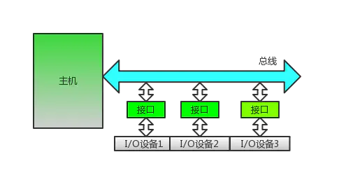
这个也是现在我们家用电脑或者一些小型计算器的数据交换结构。
在这种模式下数据交换采用程序中断的方式，我们上面知道我们启动I/O设备之后一直在轮询问I/O设备是否准备好，要是把这个阶段去掉了就好了，程序中断很好的实现了我们的夙愿:
- CPU主动启动I/O设备。
- CPU启动之后不需要再问I/O，开始做其他事，类似异步化。
- I/O准备好了之后，通过总线中断告诉CPU我已经准备好了。
- CPU进行读取数据，传输给主存中。
DMA阶段
虽然上面的方式虽然提高了CPU的利用率，但是在中断的时候CPU一样是被占用的，为了进一步解决CPU占用，又引入了DMA方式，在DMA方式中，主存和I/O设备之间有一条数据通路，这下主存和I/O设备之间交换数据时，就不需要再次中断CPU。
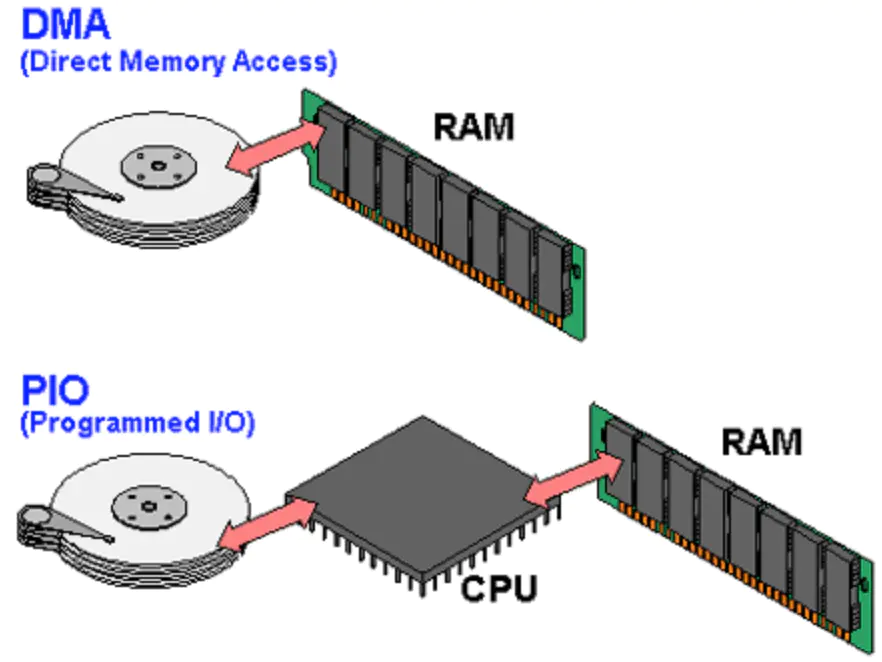
DMA 的全称叫直接内存存取（Direct Memory Access），是一种允许外围设备（硬件子系统）直接访问系统主内存的机制。也就是说，基于 DMA 访问方式，系统主内存于硬盘或网卡之间的数据传输可以绕开 CPU 的全程调度。目前大多数的硬件设备，包括磁盘控制器、网卡、显卡以及声卡等都支持 DMA 技术。
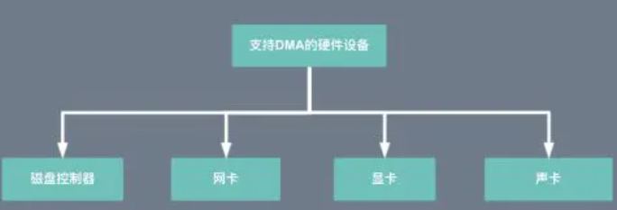
整个数据传输操作在一个 DMA 控制器的控制下进行的。CPU 除了在数据传输开始和结束时做一点处理外（开始和结束时候要做中断处理），在传输过程中 CPU 可以继续进行其他的工作。这样在大部分时间里，CPU 计算和 I/O 操作都处于并行操作，使整个计算机系统的效率大大提高。
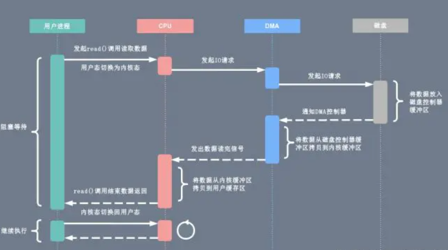
有了 DMA 磁盘控制器接管数据读写请求以后，CPU 从繁重的 I/O 操作中解脱，数据读取操作的流程如下：
- 用户进程向 CPU 发起 read 系统调用读取数据，由用户态切换为内核态，然后一直阻塞等待数据的返回。
- CPU 在接收到指令以后对 DMA 磁盘控制器发起调度指令。
- DMA 磁盘控制器对磁盘发起 I/O 请求，将磁盘数据先放入磁盘控制器缓冲区，CPU 全程不参与此过程。
- 数据读取完成后，DMA 磁盘控制器会接受到磁盘的通知，将数据从磁盘控制器缓冲区拷贝到内核缓冲区。
- DMA 磁盘控制器向 CPU 发出数据读完的信号，由 CPU 负责将数据从内核缓冲区拷贝到用户缓冲区。
- 用户进程由内核态切换回用户态，解除阻塞状态，然后等待 CPU 的下一个执行时间钟。
通道阶段
在小型计算机中采用DMA方式可以实现高速I/O设备与主机之间组成数据的交换，但在大中型计算机中，I/O配置繁多，数据传送平凡，若采用DMA方式会出现一系列问题。
- 每台I/O设备都配置专用额DMA接口，不仅增加了硬件成本，而且解决DMA和CPU访问冲突问题，会使控制变得十分复杂。
- CPU需要对众多的DMA接口进行管理，同样会影响工作效率。
所以引入了通道，通道用来管理I/O设备以及主存与I/O设备之间交换信息的部件，可以视为一种具有特殊功能的处理器。它是从属于CPU的一个专用处理器，CPU不直接参与管理，故提高了CPU的资源利用率
IO处理机阶段
输入输出系统发展到第四阶段，出现了I/O处理机。I/O处理机又称为外围处理机，它独立于主机工作，既可以完成I/O通道要完成的I/O控制，又完成格式处理，纠错等操作。具有I/O处理机的输出系统与CPU工作的并行度更高，这说明I.O系统对主机来说具有更大的独立性。
IO模型
在 操作系统中，IO 模型有如下五种：
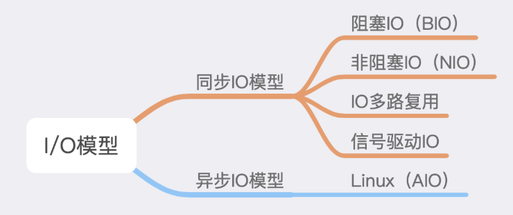
在上文已经说到，其实 IO 操作就是将数据在用户空间与内核空间进行相互转换，这个过程是通过系统调用来完成的。 IO 技术的发展目标就是如何使用尽可能少的资源来完成数据的传输，这里资源主要就是指 CPU 资源。
无论是文件 IO，还是网络 IO，最后都可以统一为用户空间和内核空间数据的交换。
BIO
BIO 是最经典的一种 IO 方式，也是最简单粗暴的方式，在发起 IO 操作之后，当前调用线程就会处在阻塞状态，直到数据传输完成。
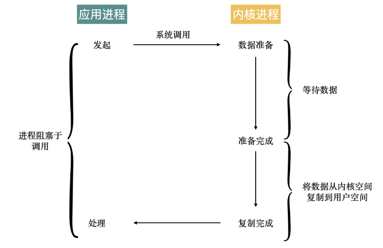
NIO
NIO 是在 BIO 基础之上的一个改进，NIO 在数据还未准备好的情况下，不会阻塞进程，而是通过轮询的方式，不断的去查询数据时候准备好，当数据可以被读取时，当前线程就会处在阻塞状态，直到数据读取完成。
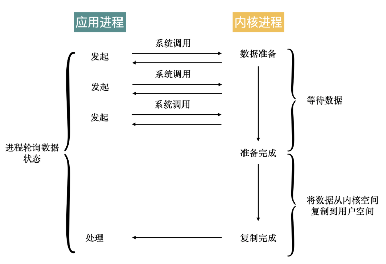
所以 NIO 中的非阻塞指的是在等待数据的阶段，实际进行数据传输时，还是阻塞的，这点需要注意。
IO 多路复用
IO 多路复用是对 NIO 的一个改进，在 NIO 中，需要不断轮询查看数据是否准备好，IO 多路复用的改进是不再主动去查询数据状态是否准备完成，而是等数据准备好的通知，当数据准备完成之后，才会开始传输数据。
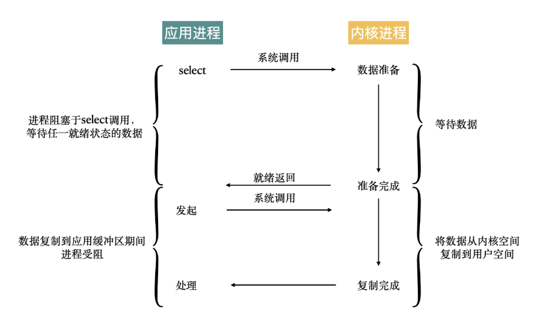
与 NIO 一样，在数据的传输阶段，当前线程依然是阻塞的。
在 Linux 系统中，IO 多路复用的方式有多种：
- select
- poll
- epoll
信号驱动 IO
信号驱动 IO 通过 sigaction 系统调用，向内核发送一个信号，当内核中数据准备好之后，当前线程也会接收到一个信号，在这个过程中，当前线程也是非阻塞的。在接收到信号之后，就可以开始传输数据。
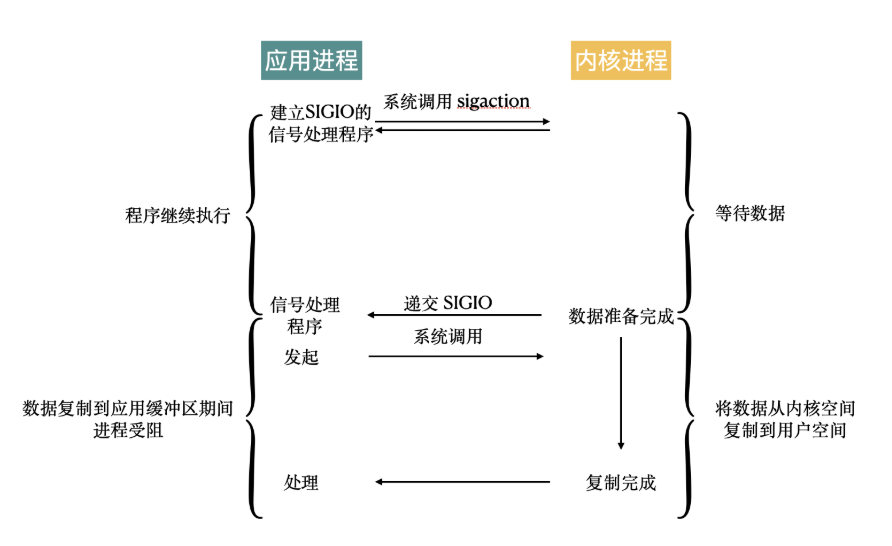
AIO
上面的这些 IO 模型虽然有些号称是不阻塞的，那是指在等待数据就绪的过程中是不阻塞的，但是在接收数据的时候，依然还是阻塞的。
AIO 是这些 IO 模型中真正实现完全不阻塞，AIO 在被调用之后直接返回，连接收数据的阶段也是非阻塞的，等到数据接收完成之后，内核才会返回一个通知，也就是说当用户进程接收到通知时，数据已经接收完成。
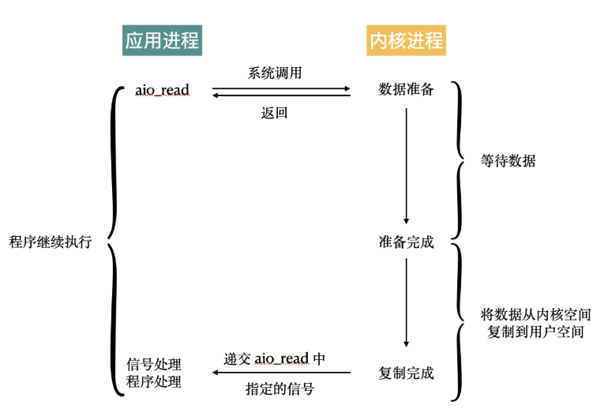
在 Linux 中提供了 AIO 的实现，但是实际上使用的并不多，更多还是使用独立的异步 IO 库，比如libevent、libev、libuv。
五种 IO 模式的总结如下：
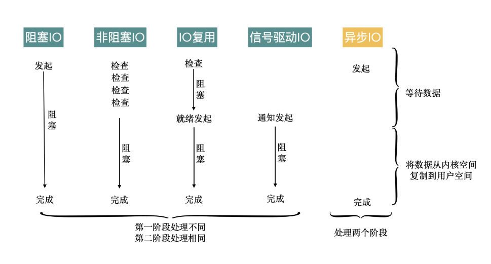
Java 中 IO 的实现
Java 中的 IO 也不例外，实际的 IO 是调用了系统的能力来完成，在用户态通过系统调转到内核态，最终实现文件的读写或者通信。
Java 中 IO 就是典型的 BIO，而且 NIO 则不是对应五种 IO 模型中的 NIO，Java 中的 NIO 实际上是使用 IO 多路复用来实现的。
Java 中的 NIO2 也称之为 AIO，正是对应操作系统中的 AIO，当然具体的实现可能是其他的库。
零拷贝
传统拷贝
服务器提供文件传输功能，需要将磁盘上的文件读取出来，通过网络协议发送到客户端。如果需要你自己编码实现这个文件传输功能，你会怎么实现呢？
通常，你会选择最直接的方法：从网络请求中找出文件在磁盘中的路径后，如果这个文件比较大，假设有 320MB，可以在内存中分配 32KB 的缓冲区，再把文件分成一万份，每份只有 32KB，这样，从文件的起始位置读入 32KB 到缓冲区，再通过网络 API 把这 32KB 发送到客户端。接着重复一万次，直到把完整的文件都发送完毕。如下图所示：
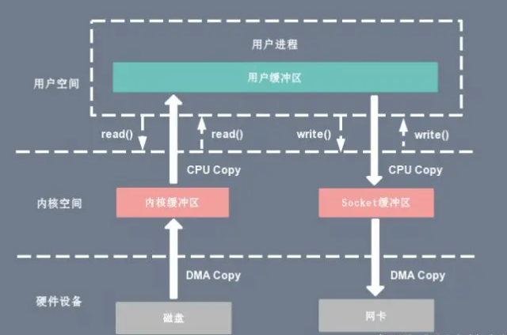
不过这个方案性能并不好，主要有两个原因。
首先，它至少经历了 4 万次用户态与内核态的上下文切换。因为每处理 32KB 的消息，就需要一次 read 调用和一次 write 调用，每次系统调用都得先从用户态切换到内核态，等内核完成任务后，再从内核态切换回用户态。可见，每处理 32KB，就有 4 次上下文切换，重复 1 万次后就有 4 万次切换。
每处理 32KB，就有 4 次上下文切换，重复 1 万次后就有 4 万次切换。上下文切换的成本并不小，虽然一次切换仅消耗几十纳秒到几微秒，但高并发服务就会放大这类时间的消耗。其次，这个方案做了 4 万次内存拷贝，对 320MB 文件拷贝的字节数也翻了 4 倍，到了 1280MB。很显然，过多的内存拷贝无谓地消耗了 CPU 资源，降低了系统的并发处理能力。所以要想提升传输文件的性能，需要从降低上下文切换的频率和内存拷贝次数两个方向入手。
再提一句，为什么读取磁盘文件时，一定要做上下文切换呢？这是因为，读取磁盘或者操作网卡都由操作系统内核完成。内核负责管理系统上的所有进程，它的权限最高，工作环境与用户进程完全不同。只要我们的代码执行 read 或者 write 这样的系统调用，一定会发生 2 次上下文切换：首先从用户态切换到内核态，当内核执行完任务后，再切换回用户态交由进程代码执行。
mmap拷贝
一种零拷贝方式是使用 mmap + write 代替原来的 read + write 方式，减少了 1 次 CPU 拷贝操作。mmap 是 Linux 提供的一种内存映射文件方法，即将一个进程的地址空间中的一段虚拟地址映射到磁盘文件地址，mmap + write 的伪代码如下：
tmp_buf = mmap(file_fd, len);
write(socket_fd, tmp_buf, len);
使用 mmap 的目的是将内核中读缓冲区（read buffer）的地址与用户空间的缓冲区（user buffer）进行映射，从而实现内核缓冲区与应用程序内存的共享，省去了将数据从内核读缓冲区（read buffer）拷贝到用户缓冲区（user buffer）的过程，然而内核读缓冲区（read buffer）仍需将数据到内核写缓冲区（socket buffer），大致的流程如下图所示：
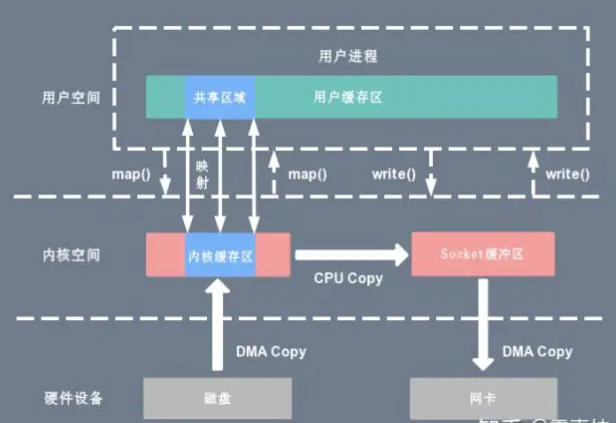
基于 mmap + write 系统调用的零拷贝方式，整个拷贝过程会发生 4 次上下文切换，1 次 CPU 拷贝和 2 次 DMA 拷贝，用户程序读写数据的流程如下：
- 用户进程通过 mmap() 函数向内核（kernel）发起系统调用，上下文从用户态（user space）切换为内核态（kernel space）。
- 将用户进程的内核空间的读缓冲区（read buffer）与用户空间的缓存区（user buffer）进行内存地址映射。
- CPU利用DMA控制器将数据从主存或硬盘拷贝到内核空间（kernel space）的读缓冲区（read buffer）。
- 上下文从内核态（kernel space）切换回用户态（user space），mmap 系统调用执行返回。
- 用户进程通过 write() 函数向内核（kernel）发起系统调用，上下文从用户态（user space）切换为内核态（kernel space）。
- CPU将读缓冲区（read buffer）中的数据拷贝到的网络缓冲区（socket buffer）。
- CPU利用DMA控制器将数据从网络缓冲区（socket buffer）拷贝到网卡进行数据传输。
- 上下文从内核态（kernel space）切换回用户态（user space），write 系统调用执行返回。
mmap 主要的用处是提高 I/O 性能，特别是针对大文件。对于小文件，内存映射文件反而会导致碎片空间的浪费，因为内存映射总是要对齐页边界，最小单位是 4 KB，一个 5 KB 的文件将会映射占用 8 KB 内存，也就会浪费 3 KB 内存。
mmap 的拷贝虽然减少了 1 次拷贝，提升了效率，但也存在一些隐藏的问题。当 mmap 一个文件时，如果这个文件被另一个进程所截获，那么 write 系统调用会因为访问非法地址被 SIGBUS 信号终止，SIGBUS 默认会杀死进程并产生一个 coredump，服务器可能因此被终止。
sendfile拷贝
sendfile 系统调用在 Linux 内核版本 2.1 中被引入，目的是简化通过网络在两个通道之间进行的数据传输过程。sendfile 系统调用的引入，不仅减少了 CPU 拷贝的次数，还减少了上下文切换的次数，它的伪代码如下：
sendfile(socket_fd, file_fd, len);
复制代码
通过 sendfile 系统调用，数据可以直接在内核空间内部进行 I/O 传输，从而省去了数据在用户空间和内核空间之间的来回拷贝。与 mmap 内存映射方式不同的是， sendfile 调用中 I/O 数据对用户空间是完全不可见的。也就是说，这是一次完全意义上的数据传输过程。
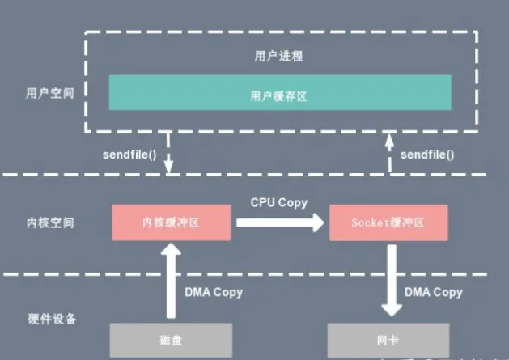
基于 sendfile 系统调用的零拷贝方式，整个拷贝过程会发生 2 次上下文切换，1 次 CPU 拷贝和 2 次 DMA 拷贝，用户程序读写数据的流程如下：
- 用户进程通过 sendfile() 函数向内核（kernel）发起系统调用，上下文从用户态（user space）切换为内核态（kernel space）。
- CPU 利用 DMA 控制器将数据从主存或硬盘拷贝到内核空间（kernel space）的读缓冲区（read buffer）。
- CPU 将读缓冲区（read buffer）中的数据拷贝到的网络缓冲区（socket buffer）。
- CPU 利用 DMA 控制器将数据从网络缓冲区（socket buffer）拷贝到网卡进行数据传输。
- 上下文从内核态（kernel space）切换回用户态（user space），sendfile 系统调用执行返回。
相比较于 mmap 内存映射的方式，sendfile 少了 2 次上下文切换，但是仍然有 1 次 CPU 拷贝操作。sendfile 存在的问题是用户程序不能对数据进行修改，而只是单纯地完成了一次数据传输过程。
sendfile+DMA拷贝
Linux 2.4 版本的内核对 sendfile 系统调用进行修改，为 DMA 拷贝引入了 gather 操作。它将内核空间（kernel space）的读缓冲区（read buffer）中对应的数据描述信息（内存地址、地址偏移量）记录到相应的网络缓冲区（ socket buffer）中，由 DMA 根据内存地址、地址偏移量将数据批量地从读缓冲区（read buffer）拷贝到网卡设备中，这样就省去了内核空间中仅剩的 1 次 CPU 拷贝操作，sendfile 的伪代码如下：
sendfile(socket_fd, file_fd, len);
在硬件的支持下，sendfile 拷贝方式不再从内核缓冲区的数据拷贝到 socket 缓冲区，取而代之的仅仅是缓冲区文件描述符和数据长度的拷贝，这样 DMA 引擎直接利用 gather 操作将页缓存中数据打包发送到网络中即可，本质就是和虚拟内存映射的思路类似。
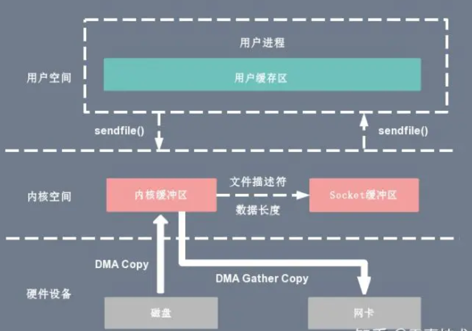
基于 sendfile + DMA gather copy 系统调用的零拷贝方式，整个拷贝过程会发生 2 次上下文切换、0 次 CPU 拷贝以及 2 次 DMA 拷贝，用户程序读写数据的流程如下：
- 用户进程通过 sendfile() 函数向内核（kernel）发起系统调用，上下文从用户态（user space）切换为内核态（kernel space）。
- CPU 利用 DMA 控制器将数据从主存或硬盘拷贝到内核空间（kernel space）的读缓冲区（read buffer）。
- CPU 把读缓冲区（read buffer）的文件描述符（file descriptor）和数据长度拷贝到网络缓冲区（socket buffer）。
- 基于已拷贝的文件描述符（file descriptor）和数据长度，CPU 利用 DMA 控制器的 gather/scatter 操作直接批量地将数据从内核的读缓冲区（read buffer）拷贝到网卡进行数据传输。
- 上下文从内核态（kernel space）切换回用户态（user space），sendfile 系统调用执行返回。
sendfile + DMA gather copy 拷贝方式同样存在用户程序不能对数据进行修改的问题，而且本身需要硬件的支持，它只适用于将数据从文件拷贝到 socket 套接字上的传输过程。
splice拷贝
sendfile 只适用于将数据从文件拷贝到 socket 套接字上，同时需要硬件的支持，这也限定了它的使用范围。Linux 在 2.6.17 版本引入 splice 系统调用，不仅不需要硬件支持，还实现了两个文件描述符之间的数据零拷贝。splice 的伪代码如下：
splice(fd_in, off_in, fd_out, off_out, len, flags);
splice 系统调用可以在内核空间的读缓冲区（read buffer）和网络缓冲区（socket buffer）之间建立管道（pipeline），从而避免了两者之间的 CPU 拷贝操作。
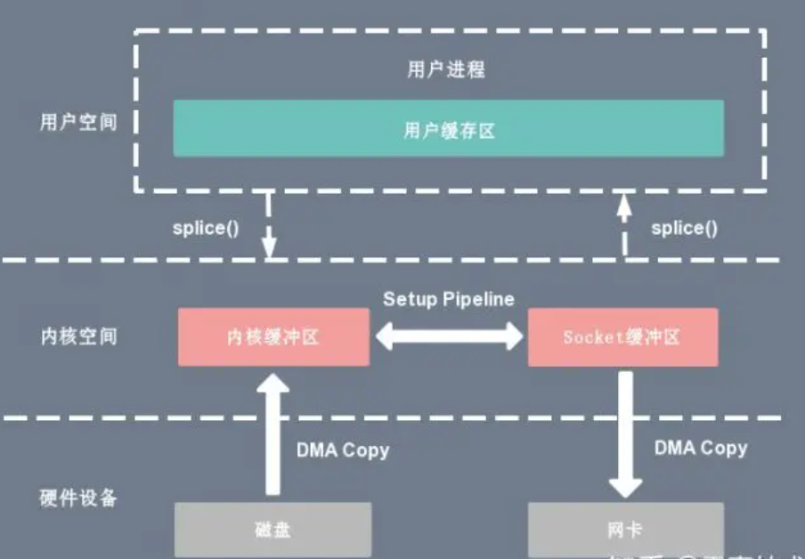
基于 splice 系统调用的零拷贝方式，整个拷贝过程会发生 2 次上下文切换，0 次 CPU 拷贝以及 2 次 DMA 拷贝，用户程序读写数据的流程如下：
- 用户进程通过 splice() 函数向内核（kernel）发起系统调用，上下文从用户态（user space）切换为内核态（kernel space）。
- CPU 利用 DMA 控制器将数据从主存或硬盘拷贝到内核空间（kernel space）的读缓冲区（read buffer）。
- CPU 在内核空间的读缓冲区（read buffer）和网络缓冲区（socket buffer）之间建立管道（pipeline）。
- CPU 利用 DMA 控制器将数据从网络缓冲区（socket buffer）拷贝到网卡进行数据传输。
- 上下文从内核态（kernel space）切换回用户态（user space），splice 系统调用执行返回。
splice 拷贝方式也同样存在用户程序不能对数据进行修改的问题。除此之外，它使用了 Linux 的管道缓冲机制，可以用于任意两个文件描述符中传输数据，但是它的两个文件描述符参数中有一个必须是管道设备。
COW拷贝
COW写时复制：在某些情况下，内核缓冲区可能被多个进程所共享，如果某个进程想要这个共享区进行 write 操作，由于 write 不提供任何的锁操作，那么就会对共享区中的数据造成破坏，写时复制的引入就是 Linux 用来保护数据的。
写时复制指的是当多个进程共享同一块数据时，如果其中一个进程需要对这份数据进行修改，那么就需要将其拷贝到自己的进程地址空间中。这样做并不影响其他进程对这块数据的操作，每个进程要修改的时候才会进行拷贝，所以叫写时拷贝。这种方法在某种程度上能够降低系统开销，如果某个进程永远不会对所访问的数据进行更改，那么也就永远不需要拷贝。
缓冲区共享
缓冲区共享方式完全改写了传统的 I/O 操作，因为传统 I/O 接口都是基于数据拷贝进行的，要避免拷贝就得去掉原先的那套接口并重新改写，所以这种方法是比较全面的零拷贝技术，目前比较成熟的一个方案是在 Solaris 上实现的 fbuf（Fast Buffer，快速缓冲区）。
fbuf 的思想是每个进程都维护着一个缓冲区池，这个缓冲区池能被同时映射到用户空间（user space）和内核态（kernel space），内核和用户共享这个缓冲区池，这样就避免了一系列的拷贝操作。
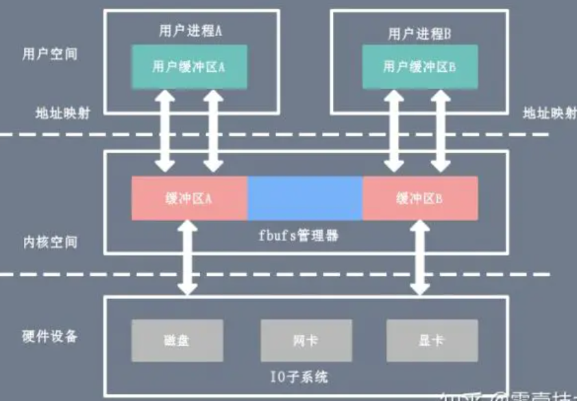
缓冲区共享的难度在于管理共享缓冲区池需要应用程序、网络软件以及设备驱动程序之间的紧密合作，而且如何改写 API 目前还处于试验阶段并不成熟。
对比
| 拷贝方式 | CPU拷贝 | DMA拷贝 | 系统调用 | 上下文切换 |
|---|---|---|---|---|
| 传统方式（read + write） | 2 | 2 | read / write | 4 |
| 内存映射（mmap + write） | 1 | 2 | mmap / write | 4 |
| sendfile | 1 | 2 | sendfile | 2 |
| sendfile + DMA gather copy | 0 | 2 | sendfile | 2 |
| splice | 0 | 2 | splice | 2 |
异步io、直接io
当调用 read 方法读取文件时，实际上 read 方法会在磁盘寻址过程中阻塞等待，导致进程无法并发地处理其他任务，如下图所示：也就是在拉数据的过程中，一整个流程下来进程都是阻塞的意思。
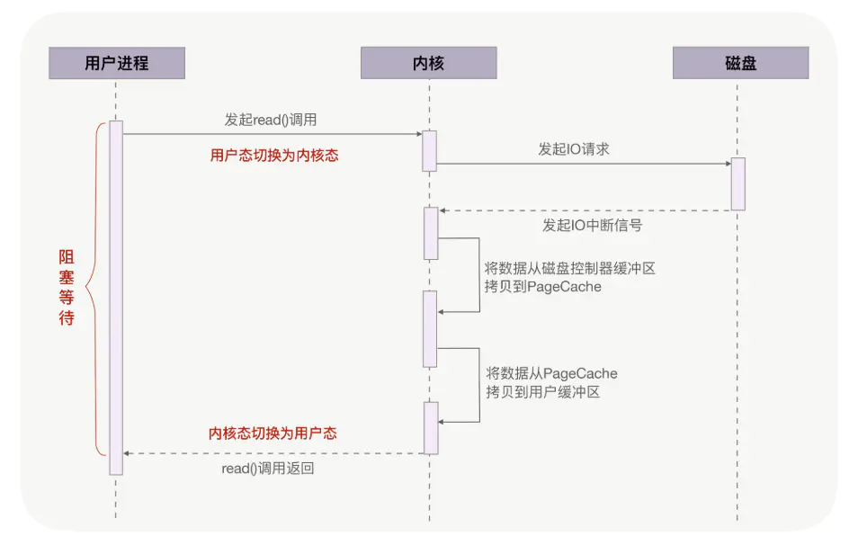
异步 IO（异步 IO 既可以处理网络 IO，也可以处理磁盘 IO，这里我们只关注磁盘 IO）可以解决阻塞问题。它把读操作分为两部分，前半部分向内核发起读请求，但不等待数据就位就立刻返回，此时进程可以并发地处理其他任务。当内核将磁盘中的数据拷贝到进程缓冲区后，进程将接收到内核的通知，再去处理数据，这是异步 IO 的后半部分。如下图所示：
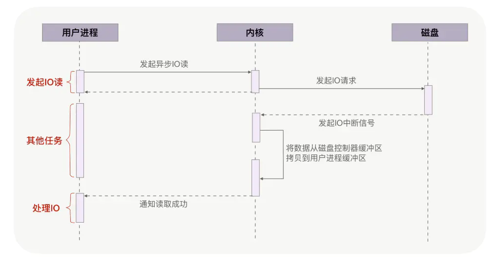
从图中可以看到，异步 IO 并没有拷贝到 PageCache 中，这其实是异步 IO 实现上的缺陷。经过 PageCache 的 IO 我们称为缓存 IO，它与虚拟内存系统耦合太紧，导致异步 IO 从诞生起到现在都不支持缓存 IO。绕过 PageCache 的 IO 是个新物种，我们把它称为直接 IO。对于磁盘，异步 IO 只支持直接 IO。
直接 IO 的应用场景并不多，主要有两种：第一，应用程序已经实现了磁盘文件的缓存，不需要 PageCache 再次缓存，引发额外的性能消耗。比如 MySQL 等数据库就使用直接 IO；第二，高并发下传输大文件，我们上文提到过，大文件难以命中 PageCache 缓存，又带来额外的内存拷贝，同时还挤占了小文件使用 PageCache 时需要的内存，因此，这时应该使用直接 IO。
直接 IO 的缺点就是无法享受 PageCache 的好处，也就是内核（IO 调度算法）会试图缓存尽量多的连续 IO 在 PageCache 中，最后合并成一个更大的 IO 再发给磁盘，这样可以减少磁盘的寻址操作；另外，内核也会预读后续的 IO 放在 PageCache 中，减少磁盘操作。这些它都是做不到的
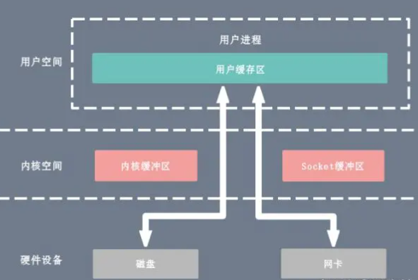
总结
基于用户缓冲区传输文件时，过多的内存拷贝与上下文切换次数会降低性能。零拷贝技术在内核中完成内存拷贝，天然降低了内存拷贝次数。它通过一次系统调用合并了磁盘读取与网络发送两个操作，降低了上下文切换次数。尤其是，由于拷贝在内核中完成，它可以最大化使用 socket 缓冲区的可用空间，从而提高了一次系统调用中处理的数据量，进一步降低了上下文切换次数。
零拷贝技术基于 PageCache，而 PageCache 缓存了最近访问过的数据，提升了访问缓存数据的性能，同时，为了解决机械磁盘寻址慢的问题，它还协助 IO 调度算法实现了 IO 合并与预读（这也是顺序读比随机读性能好的原因），这进一步提升了零拷贝的性能。几乎所有操作系统都支持零拷贝，如果应用场景就是把文件发送到网络中，那么零拷贝确实是个好方法。
Tips：其实这里如果是使用SSD这类固态硬盘（不用旋转磁头），PageCache就没有很大的影响，细节请参照我上一篇的那个SSD的文
不过，零拷贝有一个缺点，就是不允许进程对文件内容作一些加工再发送，比如数据压缩后再发送。另外，当 PageCache 引发负作用时，也不能使用零拷贝，此时可以用异步 IO+ 直接 IO 替换。我们通常会设定一个文件大小阈值，针对大文件使用异步 IO 和直接 IO，而对小文件使用零拷贝。